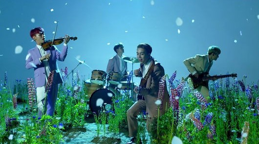

LUCY 루시
LUCY is a four-member band consisting of Shin Ye-chan (Violin), Choi Sang-yeop (Vocal, Guitar), Cho Won-sang (Producing, Bass) and Shin Gwang-il (Vocal, Drum), the runner-up of JTBC ‘SUPER BAND’ in 2019. When it was appearing on ‘SUPER BAND’, it was loved for its unique music color and refreshing charm using Ambience Sound. Starting with ‘Flowering’, in May 2020, it completed a four-season narrative, including ‘Jogging’, ‘Snooze’ and ‘Hero’, showing distinctive musical colors. It held its first solo concert with the release of its fourth single album ‘Gatcha!’ in June 2021 and has established itself as a next-generation K-band with both musicality and popularity by selling out all seats before the online and offline concerts in July.
I love Lucy's song very very very very much. One of the songs in my life is "Hero". In particular, 'hero' and 'Flowering' go crazy when you hear them in spring.
Their songs combine guitar, drum, and vocal to create a fantastic harmony.
I like their songs, but I don't really care about the group itself, so I don't know much about them.